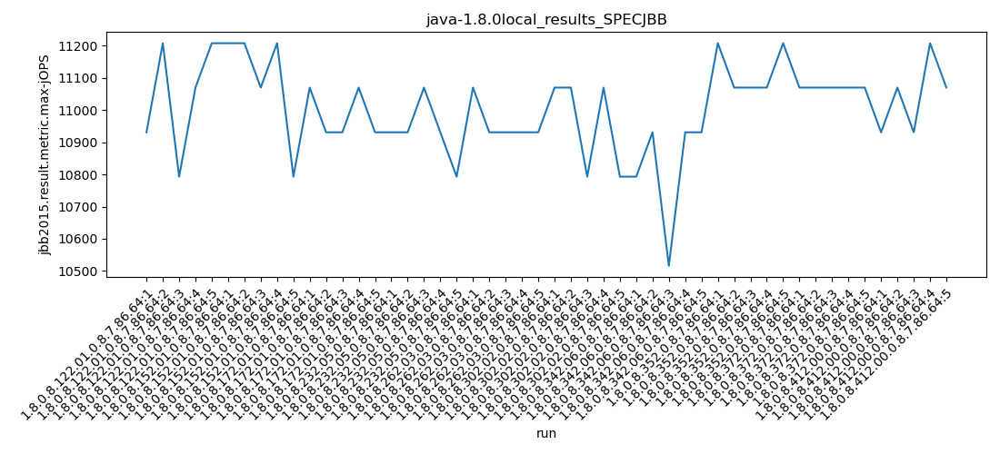
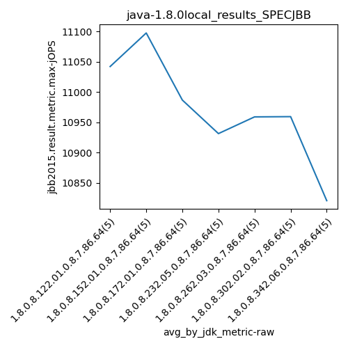
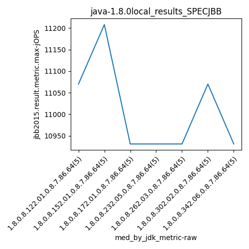
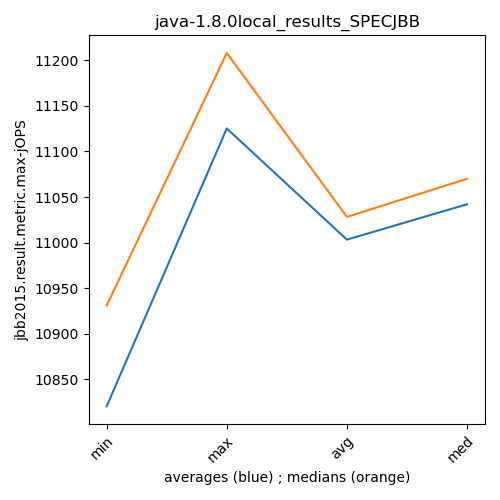
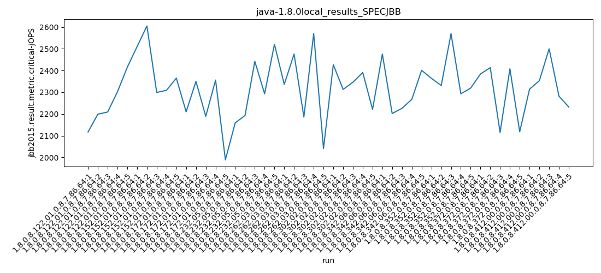
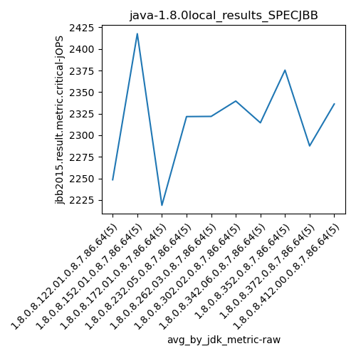
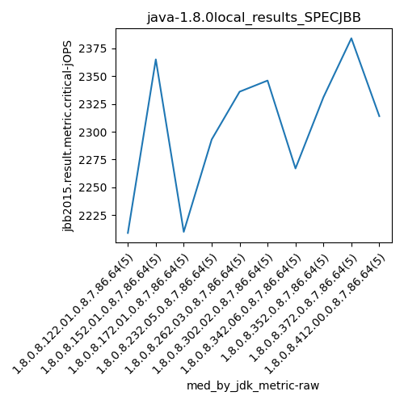
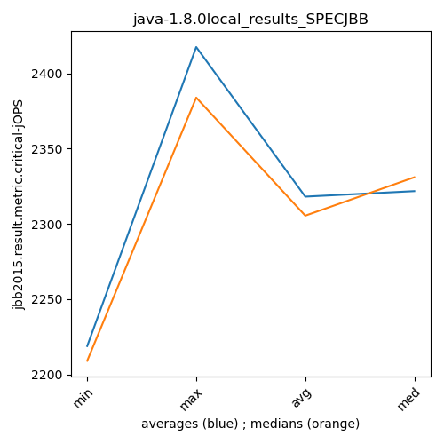

java-1.8.0 SPECJBB
Context at bottom
/home/jvanek/git/benchmarks-in-nested-virtualisation-toolchain/final_results/local_results/local_results_J2DBENCH
java-1.8.0
SPECJBB
/home/jvanek/git/benchmarks-in-nested-virtualisation-toolchain/final_results/local_results/local_results_SPECJBB
java-1.8.0
SPECJBB
local_results_SPECJBB
- local_results_SPECJBB - max-jops
- local_results_SPECJBB - critical jops
local_results_SPECJBB - max-jops
Expected number of java-1.8.0 JDKs: 10
1st avgmed_alljdks_metric:
/home/jvanek/git/benchmarks-in-nested-virtualisation-toolchain/final_results/result_processing.py /home/jvanek/git/benchmarks-in-nested-virtualisation-toolchain/final_results/local_results/local_results_SPECJBB jbb2015.result.metric.max-jOPS False
values: [10931, 11208, 10793, 11070, 11208, 11208, 11208, 11070, 11208, 10793, 11070, 10931, 10931, 11070, 10931, 10931, 10931, 11070, 10931, 10793, 11070, 10931, 10931, 10931, 10931, 11070, 11070, 10793, 11070, 10793, 10793, 10931, 10516, 10931, 10931, 11208, 11070, 11070, 11070, 11208, 11070, 11070, 11070, 11070, 11070, 10931, 11070, 10931, 11208, 11070]

Expected number of iterations: 5
final number of values: 50 out of 50
Pass rate: 100.0%
values: (10516, 11208, 11003.28, 11070)

** accuracy from all jdks and runs
more is better
MIN: 10516
MAX: 11208
AVG: 11003.28
MED: 11070
Relative differences 1:
MIN-MAX: 6.0 %
MIN-AVG: 4.0 %
MIN-MED: 5.0 %
MAX-MIN: -7.0 %
MAX-AVG: -2.0 %
MAX-MED: -1.0 %
AVG-MED: 1.0 %
stored to java-1.8.0.properties. sort | uniq that!
2nd avgmed_by_jdk_metric:
values: [11042.0, 11097.4, 10986.6, 10931.2, 10958.8, 10959.2, 10820.4, 11125.2, 11070.0, 11042.0]

values: [11070, 11208, 10931, 10931, 10931, 11070, 10931, 11070, 11070, 11070]

values: (10820.4, 11125.2, 11003.28, 11042.0)
values: (10931, 11208, 11028.2, 11070)

** accuracy from all jdks where runs were avged
more is better
MIN: 10820.4
MAX: 11125.2
AVG: 11003.28
MED: 11042.0
Relative differences 1:
MIN-MAX: 3.0 %
MIN-AVG: 2.0 %
MIN-MED: 2.0 %
MAX-MIN: -3.0 %
MAX-AVG: -1.0 %
MAX-MED: -1.0 %
AVG-MED: 0.0 %
stored to java-1.8.0.properties. sort | uniq that!
** accuracy from all jdks where runs were medianed
more is better
MIN: 10931
MAX: 11208
AVG: 11028.2
MED: 11070
Relative differences 1:
MIN-MAX: 2.0 %
MIN-AVG: 1.0 %
MIN-MED: 1.0 %
MAX-MIN: -3.0 %
MAX-AVG: -2.0 %
MAX-MED: -1.0 %
AVG-MED: 0.0 %
stored to java-1.8.0.properties. sort | uniq that!
local_results_SPECJBB - critical jops
Expected number of java-1.8.0 JDKs: 10
1st avgmed_alljdks_metric:
/home/jvanek/git/benchmarks-in-nested-virtualisation-toolchain/final_results/result_processing.py /home/jvanek/git/benchmarks-in-nested-virtualisation-toolchain/final_results/local_results/local_results_SPECJBB jbb2015.result.metric.critical-jOPS False
values: [2117, 2199, 2209, 2302, 2415, 2510, 2605, 2299, 2309, 2365, 2210, 2350, 2189, 2356, 1989, 2159, 2193, 2442, 2293, 2521, 2336, 2476, 2186, 2570, 2041, 2427, 2313, 2346, 2391, 2221, 2476, 2202, 2226, 2267, 2401, 2364, 2331, 2570, 2293, 2319, 2384, 2413, 2115, 2408, 2118, 2314, 2353, 2500, 2282, 2232]

Expected number of iterations: 5
final number of values: 50 out of 50
Pass rate: 100.0%
values: (1989, 2605, 2318.14, 2319)

** accuracy from all jdks and runs
more is better
MIN: 1989
MAX: 2605
AVG: 2318.14
MED: 2319
Relative differences 1:
MIN-MAX: 24.0 %
MIN-AVG: 14.0 %
MIN-MED: 14.0 %
MAX-MIN: -31.0 %
MAX-AVG: -12.0 %
MAX-MED: -12.0 %
AVG-MED: 0.0 %
stored to java-1.8.0.properties. sort | uniq that!
2nd avgmed_by_jdk_metric:
values: [2248.4, 2417.6, 2218.8, 2321.6, 2321.8, 2339.6, 2314.4, 2375.4, 2287.6, 2336.2]

values: [2209, 2365, 2210, 2293, 2336, 2346, 2267, 2331, 2384, 2314]

values: (2218.8, 2417.6, 2318.1400000000003, 2321.8)
values: (2209, 2384, 2305.5, 2331)

** accuracy from all jdks where runs were avged
more is better
MIN: 2218.8
MAX: 2417.6
AVG: 2318.1400000000003
MED: 2321.8
Relative differences 1:
MIN-MAX: 8.0 %
MIN-AVG: 4.0 %
MIN-MED: 4.0 %
MAX-MIN: -9.0 %
MAX-AVG: -4.0 %
MAX-MED: -4.0 %
AVG-MED: 0.0 %
stored to java-1.8.0.properties. sort | uniq that!
** accuracy from all jdks where runs were medianed
more is better
MIN: 2209
MAX: 2384
AVG: 2305.5
MED: 2331
Relative differences 1:
MIN-MAX: 7.0 %
MIN-AVG: 4.0 %
MIN-MED: 5.0 %
MAX-MIN: -8.0 %
MAX-AVG: -3.0 %
MAX-MED: -2.0 %
AVG-MED: 1.0 %
stored to java-1.8.0.properties. sort | uniq that!
/home/jvanek/git/benchmarks-in-nested-virtualisation-toolchain/final_results/local_results/local_results_RADARGUNs1
java-1.8.0
SPECJBB
/home/jvanek/git/benchmarks-in-nested-virtualisation-toolchain/final_results/local_results/local_results_RADARGUNs3
java-1.8.0
SPECJBB
/home/jvanek/git/benchmarks-in-nested-virtualisation-toolchain/final_results/local_results/local_results_JMH
java-1.8.0
SPECJBB
/home/jvanek/git/benchmarks-in-nested-virtualisation-toolchain/final_results/local_results/local_results_DACAPO
java-1.8.0
SPECJBB
pass rates:
local_results_SPECJBB=100.0%
Context:
- local_results
- SPECJBB